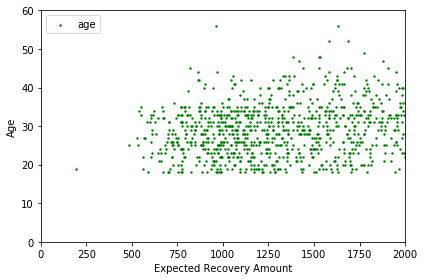
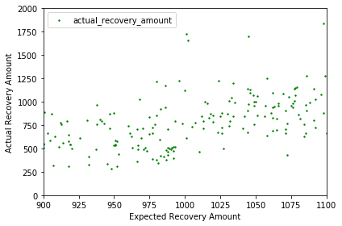

Exploratory data analysis untuk mengetahui efektivitas upaya pemulihan hutang bank dengan menggunakan scipy.
jupyter
code
analysis
EDA
linear regression
Author
I Made Nusa Yudiskara
Published
November 5, 2022
1. Regression discontinuity: banking recovery
Setelah suatu utang dinyatakan secara hukum “tidak dapat ditagih” oleh bank, rekening tersebut dianggap “hilang”. Tapi itu tidak berarti bank melupakan utang tersebut. Mereka masih ingin mengumpulkan sebagian dari uang yang mereka miliki. Bank akan menilai akun untuk mengevaluasi “Expected Recovery Amount”, yaitu jumlah uang yang diharapkan yang mungkin dapat diterima bank dari pelanggan di masa depan. Jumlah ini merupakan fungsi dari probabilitas pelanggan membayar, total hutang, dan faktor lain yang mempengaruhi kemampuan dan kemauan pelanggan membayar.
Bank telah menerapkan strategi pemulihan yang berbeda pada ambang batas yang berbeda ($1000, $2000, dll.) di mana semakin besar jumlah pemulihan yang diharapkan, semakin banyak upaya yang dilakukan bank untuk menghubungi pelanggan. Untuk jumlah pemulihan yang rendah (Level 0), bank hanya menambahkan informasi kontak pelanggan ke dialer otomatis dan sistem email mereka. Untuk strategi pemulihan yang lebih tinggi, bank mengeluarkan lebih banyak biaya karena mereka memanfaatkan sumber daya manusia dalam lebih banyak upaya untuk mendapatkan pembayaran. Setiap level tambahan dari strategi pemulihan memerlukan tambahan $50 per pelanggan sehingga pelanggan di Strategi Pemulihan Level 1 membebani perusahaan $50 lebih banyak daripada pelanggan di Level 0. Pelanggan di Level 2 berharga $50 lebih mahal daripada pelanggan di Level 1, dst.
Pertanyaan besar: apakah jumlah ekstra yang diperoleh pada level yang lebih tinggi dari biaya $50 yang dikeluarkan? Dengan kata lain, apakah ada lompatan (juga disebut “discontinuity”) lebih dari $50 dalam jumlah yang dipulihkan pada tingkat level strategi yang lebih tinggi? Saya akan mencoba menjawab pertanyaan tersebut disini.
Pertama, kita akan memuat dataset perbankan dan melihat beberapa baris data pertama. Untuk memahami kumpulan data itu sendiri dan mulai memikirkan cara menganalisis data.
# Import modulesimport pandas as pdimport numpy as np# load dataset ke pandas dataframedf = pd.read_csv("datasets/bank_data.csv")# Tampilkan 5 baris pertama dataframedf.head()
id
expected_recovery_amount
actual_recovery_amount
recovery_strategy
age
sex
0
2030
194
263.540
Level 0 Recovery
19
Male
1
1150
486
416.090
Level 0 Recovery
25
Female
2
380
527
429.350
Level 0 Recovery
27
Male
3
1838
536
296.990
Level 0 Recovery
25
Male
4
1995
541
346.385
Level 0 Recovery
34
Male
2. Graphical exploratory data analysis
Bank telah menerapkan strategi pemulihan yang berbeda pada ambang batas yang berbeda ($1000, $2000, $3000 dan $5000) di mana semakin besar Jumlah Pemulihan yang Diharapkan, semakin banyak upaya yang dilakukan bank untuk menghubungi pelanggan. Menekankan pada transisi pertama (antara Level 0 dan Level 1) berarti kita berfokus pada populasi dengan “Expected Recovery Amounts” yang Diharapkan antara $0 dan $2000 di mana transisi artar Level terjadi pada $1000. Pelanggan di Level 1 (“Expected Recovery Amounts” antara $1001 dan $2000) menerima lebih banyak perhatian dari bank dan, menurut definisi, mereka memiliki Jumlah Pemulihan yang Diharapkan lebih tinggi daripada pelanggan di Level 0 (antara $1 dan $1000) .
Berikut ini ringkasan singkat tentang Level dan ambang batas lagi:
Level 0: Jumlah pemulihan yang diharapkan >$0 dan <=$1000
Level 1: Jumlah pemulihan yang diharapkan >$1000 dan <=$2000
Threshold $1000 memisahkan Level 0 dari Level 1
Pertanyaan kuncinya adalah apakah ada faktor lain selain Jumlah Pemulihan yang Diharapkan yang juga bervariasi secara sistematis di ambang $1000. Misalnya, apakah usia pelanggan menunjukkan lompatan (diskontinuitas) pada ambang $1000 atau apakah usia itu bervariasi? Kita dapat memeriksa ini dengan terlebih dahulu membuat scatter plot usia sebagai fungsi dari “Expected Recovery Amounts” untuk rentang kecil “Expected Recovery Amounts”, $0 hingga $2000. Rentang ini mencakup Level 0 dan 1.
# Scatter plot Age vs. Expected Recovery Amountfrom matplotlib import pyplot as plt%matplotlib inlineplt.scatter(x=df['expected_recovery_amount'], y=df['age'], c="g", s=2)plt.xlim(0, 2000)plt.ylim(0, 60)plt.xlabel( "Expected Recovery Amount")plt.ylabel("Age")plt.legend(loc=2)
<matplotlib.legend.Legend at 0x7f873c306f28>
/usr/local/lib/python3.6/dist-packages/matplotlib/figure.py:2267: UserWarning: This figure includes Axes that are not compatible with tight_layout, so results might be incorrect.
warnings.warn("This figure includes Axes that are not compatible "

3. Statistical test: age vs. expected recovery amount
Kita ingin memastikan bahwa variabel seperti usia dan jenis kelamin serupa di atas ataupun di bawah threshold $1000 “Expected Recovery Amount”. Ini penting karena kita ingin dapat menyimpulkan bahwa perbedaan “Expected Recovery Amount” dan jumlah pemulihan sebenarnya (Actual Recovery Amount) disebabkan oleh Strategi Pemulihan yang lebih tinggi dan bukan karena perbedaan lain seperti usia atau jenis kelamin.
Plot sebar usia dan “Expected Recovery Amount” tidak menunjukkan lompatan yang jelas sekitar $1000. Selanjutnya akan dilakukan analisis statistik yang memeriksa usia rata-rata pelanggan yang berada hampir tepat di atas dan di bawah ambang batas. Kita bisa mulai dengan memeriksa kisaran dari $900 hingga $1100.
Untuk menentukan apakah ada perbedaan usia tepat di atas dan di bawah ambang batas, akan digunakan uji Kruskal-Wallis, uji statistik yang tidak membuat asumsi distribusi.
# Import stats module dari library scipyfrom scipy import stats# Compute average age just below and above the threshold# Hitung rata-rata usia pelanggan yang berada disekitar bagian atas dan bagian bawah thresholdera_900_1100 = df.loc[(df['expected_recovery_amount']<1100) & (df['expected_recovery_amount']>=900)]by_recovery_strategy = era_900_1100.groupby(['recovery_strategy'])by_recovery_strategy['age'].describe().unstack()# Lakukan Kruskal-Wallis test Level_0_age = era_900_1100.loc[df['recovery_strategy']=="Level 0 Recovery"]['age']Level_1_age = era_900_1100.loc[df['recovery_strategy']=="Level 1 Recovery"]['age']stats.kruskal(Level_0_age, Level_1_age)
4. Statistical test: sex vs. expected recovery amount
Terlihat bahwa tidak ada lompatan besar dalam rata-rata usia pelanggan yang berada disekitar threshold $1000 bagian atas dan bawah dengan melakukan uji statistik serta memeriksa secara grafis dengan scatter plot.
Kita juga sebaiknya menguji bahwa persentase pelanggan laki-laki tidak melampaui ambang $1000. Kita bisa mulai dengan menjelajahi kisaran $900 hingga $1100 dan kemudian menyesuaikan kisaran ini.
Kita dapat memeriksa pertanyaan ini secara statistik dengan mengembangkan cross-tabs serta melakukan chi-square tests dari persentase pelanggan yang laki-laki dan perempuan.
# Jumlah pelanggan pada setiap kategoricrosstab = pd.crosstab(df.loc[(df['expected_recovery_amount']<1100) & (df['expected_recovery_amount']>=900)]['recovery_strategy'], df['sex'])print(crosstab)# Chi-square testchi2_stat, p_val, dof, ex = stats.chi2_contingency(crosstab)print(p_val)
sex Female Male
recovery_strategy
Level 0 Recovery 32 57
Level 1 Recovery 39 55
0.5377947810444592
Sekarang kita sudah cukup yakin bahwa pelanggan yang berada tepat di atas dan di bawah threshold $1000, rata-rata, memiliki usia rata-rata dan persentase laki-laki.
Sekarang saatnya untuk fokus pada tujuan utama, jumlah pemulihan yang sebenarnya (Actual Recovery Amount).
Langkah pertama dalam memeriksa hubungan antara Actual Recovery Amount dan Expected Recovery Amount adalah membuat scatter plot di mana kita ingin memfokuskan perhatian kita pada kisaran threshold bawah dan atas. Secara khusus, akan dibuat scatter plot Jumlah Expected Recovery Amount (X) dan Actual Recovery Amount (Y) untuk Actual Recovery Amount diantara $900 hingga $1100. Rentang ini mencakup Level 0 dan 1. Pertanyaan kuncinya adalah apakah kita melihat diskontinuitas (lompatan) di sekitar ambang $1000.
# Scatter plot of Actual Recovery Amount vs. Expected Recovery Amount plt.scatter(x=df['expected_recovery_amount'], y=df['actual_recovery_amount'], c="g", s=2)plt.xlim(900, 1100)plt.ylim(0, 2000)plt.xlabel("Expected Recovery Amount")plt.ylabel("Actual Recovery Amount")plt.legend(loc=2)plt.show
<function matplotlib.pyplot.show(*args, **kw)>
/usr/local/lib/python3.6/dist-packages/matplotlib/figure.py:2267: UserWarning: This figure includes Axes that are not compatible with tight_layout, so results might be incorrect.
warnings.warn("This figure includes Axes that are not compatible "

6. Statistical analysis: recovery amount
Seperti yang telah dilakukan dengan variable usia, kita juga dapat melakukan uji statistik untuk melihat apakah jumlah pemulihan yang sebenarnya memiliki diskontinuitas di atas ambang $1000. Ini akan dilakukan untuk dua rentang berbeda dari jumlah pemulihan yang diharapkan $900 hingga $1100 dan untuk kisaran sempit $950 hingga $1050 untuk melihat apakah hasilnya konsisten.
Sekali lagi, kita akan menggunakan tes Kruskal-Wallis.
Pertama-tama, akan dihitung jumlah pemulihan aktual rata-rata untuk pelanggan tersebut tepat di bawah dan tepat di atas threshold menggunakan kisaran dari $900 hingga $1100. Kemudian akan dilakukan uji Kruskal-Wallis untuk melihat apakah jumlah pemulihan sebenarnya berbeda tepat di atas dan di bawah threshold. Setelah itu, langkah-langkah ini akan diulangi untuk rentang yang lebih kecil dari $950 hingga $1050.
# Hitung rata-rata actual recovery amount yang ada diatas dan dibawah thresholdby_recovery_strategy['actual_recovery_amount'].describe().unstack()# Lakukan Kruskal-Wallis testLevel_0_actual = era_900_1100.loc[df['recovery_strategy']=='Level 0 Recovery']['actual_recovery_amount']Level_1_actual = era_900_1100.loc[df['recovery_strategy']=='Level 1 Recovery']['actual_recovery_amount']stats.kruskal(Level_0_actual,Level_1_actual) # Ulangi untuk rentang yang lebil kecil $950 - $1050era_950_1050 = df.loc[(df['expected_recovery_amount']<1050) & (df['expected_recovery_amount']>=950)]Level_0_actual = era_950_1050.loc[df['recovery_strategy']=='Level 0 Recovery']['actual_recovery_amount']Level_1_actual = era_950_1050.loc[df['recovery_strategy']=='Level 1 Recovery']['actual_recovery_amount']stats.kruskal(Level_0_actual,Level_1_actual)
Kita sekarang ingin mengambil pendekatan berbasis regresi untuk memperkirakan dampak program pada threshold $1000 menggunakan data yang berada tepat di atas dan di bawah threshold.
Kita akan membuat dua model. Model pertama tidak memiliki threshold, sedangkan model kedua akan menyertakan threshold.
Model pertama memprediksi actual recovery amount (variabel dependen) sebagai fungsi dari expected recovery amount (variabel independen). Diharapkan akan ada hubungan positif yang kuat antara kedua variabel ini.
Kita akan memeriksa penyesuaian R-kuadrat untuk melihat persentase varians yang dijelaskan oleh model. Dalam model ini, kita tidak memperlihatkan threshold tetapi hanya melihat bagaimana variabel yang digunakan untuk menetapkan pelanggan (expected recovery amount) berhubungan dengan variabel hasil (actual recovery amount).
# Import statsmodelsimport statsmodels.api as sm# Tentukan nilai X dan yX = era_900_1100['expected_recovery_amount']y = era_900_1100['actual_recovery_amount']X = sm.add_constant(X)# Buat model linear regressionmodel = sm.OLS(y, X).fit()predictions = model.predict(X)model.summary()# Tampilkan rangkuman statistik model
OLS Regression Results
Dep. Variable:
actual_recovery_amount
R-squared:
0.261
Model:
OLS
Adj. R-squared:
0.256
Method:
Least Squares
F-statistic:
63.78
Date:
Sun, 06 Nov 2022
Prob (F-statistic):
1.56e-13
Time:
05:42:26
Log-Likelihood:
-1278.9
No. Observations:
183
AIC:
2562.
Df Residuals:
181
BIC:
2568.
Df Model:
1
Covariance Type:
nonrobust
coef
std err
t
P>|t|
[0.025
0.975]
const
-1978.7597
347.741
-5.690
0.000
-2664.907
-1292.612
expected_recovery_amount
2.7577
0.345
7.986
0.000
2.076
3.439
Omnibus:
64.493
Durbin-Watson:
1.777
Prob(Omnibus):
0.000
Jarque-Bera (JB):
185.818
Skew:
1.463
Prob(JB):
4.47e-41
Kurtosis:
6.977
Cond. No.
1.80e+04
Warnings: [1] Standard Errors assume that the covariance matrix of the errors is correctly specified. [2] The condition number is large, 1.8e+04. This might indicate that there are strong multicollinearity or other numerical problems.
8. Regression modeling: adding true threshold
Dari model pertama, kita melihat bahwa koefisien regresi dari “expected recovery amount” signifikan secara statistik.
Model kedua menambahkan indikator threshold ke model (dalam hal ini di $1000).
Kita akan membuat variabel indikator (baik 0 atau 1) yang menunjukkan apakah jumlah pemulihan yang diharapkan lebih besar dari $1000 atau tidak. Ketika kita menambahkan threshold yang sebenarnya ke model, koefisien regresi untuk threshold yang sebenarnya mewakili jumlah tambahan yang dipulihkan karena strategi pemulihan yang lebih tinggi. Artinya, koefisien regresi untuk threshold sebenarnya mengukur ukuran diskontinuitas untuk pelanggan tepat di atas dan tepat di bawah ambang batas.
Jika strategi pemulihan yang lebih tinggi membantu memulihkan lebih banyak uang, maka koefisien regresi dari ambang batas yang sebenarnya akan lebih besar dari nol. Jika strategi pemulihan yang lebih tinggi tidak membantu memulihkan lebih banyak uang, maka koefisien regresi tidak akan signifikan secara statistik.
# Create indicator (0 or 1) for expected recovery amount >= $1000# Buat indikator (0 atau 1) untuk expected recovery amount >= $1000df['indicator_1000'] = np.where(df['expected_recovery_amount']<1000, 0, 1)era_900_1100 = df.loc[(df['expected_recovery_amount']<1100) & (df['expected_recovery_amount']>=900)]# Tentukan X and yX = era_900_1100[['expected_recovery_amount','indicator_1000']]y = era_900_1100['actual_recovery_amount']X = sm.add_constant(X)# Buat model linear regression model = sm.OLS(y,X).fit()# Tampilkan rangkuman statistik modelmodel.summary()
OLS Regression Results
Dep. Variable:
actual_recovery_amount
R-squared:
0.314
Model:
OLS
Adj. R-squared:
0.307
Method:
Least Squares
F-statistic:
41.22
Date:
Sun, 06 Nov 2022
Prob (F-statistic):
1.83e-15
Time:
05:42:26
Log-Likelihood:
-1272.0
No. Observations:
183
AIC:
2550.
Df Residuals:
180
BIC:
2560.
Df Model:
2
Covariance Type:
nonrobust
coef
std err
t
P>|t|
[0.025
0.975]
const
3.3440
626.274
0.005
0.996
-1232.440
1239.128
expected_recovery_amount
0.6430
0.655
0.981
0.328
-0.650
1.936
indicator_1000
277.6344
74.043
3.750
0.000
131.530
423.739
Omnibus:
65.977
Durbin-Watson:
1.906
Prob(Omnibus):
0.000
Jarque-Bera (JB):
186.537
Skew:
1.510
Prob(JB):
3.12e-41
Kurtosis:
6.917
Cond. No.
3.37e+04
Warnings: [1] Standard Errors assume that the covariance matrix of the errors is correctly specified. [2] The condition number is large, 3.37e+04. This might indicate that there are strong multicollinearity or other numerical problems.
9. Regression modeling: adjusting the window
Koefisien regresi untuk threshold sebenarnya signifikan secara statistik dengan perkiraan dampak sekitar $278. Ini jauh lebih besar daripada $50 per pelanggan yang dibutuhkan untuk menjalankan strategi pemulihan yang lebih tinggi ini.
Untuk menambahkan keyakinan bahwa hasil ini bukan karena memilih rentang expected recovery amount dari $900 hingga $1100. Analisis ini untuk rentang dari $950 hingga $1050 untuk melihat apakah kita mendapatkan hasil yang serupa.
Jawabannya? Dengan menggunakan rentang lebar ($900 hingga $1100) atau lebih sempit ($950 hingga $1050), jumlah pemulihan tambahan pada strategi pemulihan yang lebih tinggi jauh lebih besar daripada $50 per pelanggan yang dikeluarkan untuk strategi pemulihan yang lebih tinggi. Jadi kami menyimpulkan bahwa strategi pemulihan yang lebih tinggi sebanding dengan biaya tambahan $50 per pelanggan.
era_950_1050 = df.loc[(df['expected_recovery_amount']<1050) & (df['expected_recovery_amount']>=950 )]# Tentukan X dan y X = era_950_1050[['expected_recovery_amount','indicator_1000']]y = era_950_1050['actual_recovery_amount']X = sm.add_constant(X)# Buat model linear regression model = sm.OLS(y,X).fit()# Tampilkan rangkuman statistik modelmodel.summary()
OLS Regression Results
Dep. Variable:
actual_recovery_amount
R-squared:
0.283
Model:
OLS
Adj. R-squared:
0.269
Method:
Least Squares
F-statistic:
18.99
Date:
Sun, 06 Nov 2022
Prob (F-statistic):
1.12e-07
Time:
05:42:26
Log-Likelihood:
-692.92
No. Observations:
99
AIC:
1392.
Df Residuals:
96
BIC:
1400.
Df Model:
2
Covariance Type:
nonrobust
coef
std err
t
P>|t|
[0.025
0.975]
const
-279.5243
1840.707
-0.152
0.880
-3933.298
3374.250
expected_recovery_amount
0.9189
1.886
0.487
0.627
-2.825
4.663
indicator_1000
286.5337
111.352
2.573
0.012
65.502
507.566
Omnibus:
39.302
Durbin-Watson:
1.955
Prob(Omnibus):
0.000
Jarque-Bera (JB):
82.258
Skew:
1.564
Prob(JB):
1.37e-18
Kurtosis:
6.186
Cond. No.
6.81e+04
Warnings: [1] Standard Errors assume that the covariance matrix of the errors is correctly specified. [2] The condition number is large, 6.81e+04. This might indicate that there are strong multicollinearity or other numerical problems.